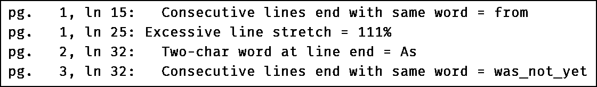

UP: modes
UP: modesTypo Mode
What is a Typo Flaw?
A typographic flaw is not an error. It is something with poor typesetting. A book with many typographic flaws will provide a poor reader experience.
When a portion of your book is near completion, you may produce a PDF in typo mode. Novelette will inspect it for a variety of typographic flaws. Nothing is corrected. Instead, the PDF will have flaws highlighted in color, and a separate *.typo file will describe them.
The only way to correct typographic flaws is to edit your writing. But it is hard to correct all flaws, partly because some are unimportant, and partly because correcting a flaw may introduce a new flaw.
The method for finding flaws does not depend on language, but you may customize the lists of one-character and two-character flaws, according to your needs.
 top
topTypo Mode
\mode{typo} or \mode{typo*}
This Preamble command invokes typo mode. It is a form of draft mode, so the PDF will have metadata identifying it as draft.
In the PDF, typographic flaws will be highlighted by coloring the problem text (or possibly a colored bar in the margin). Also, a plain-text file with extension typo will be created, listing the flaws and pages.
Typo mode does not correct anything. The paragraphs and page breaks are unchanged. The only difference is coloration.
With \mode{typo}, non-highlighted text remains black. With
\mode{typo*}, non-highlighted text become light grey, so that
the highlighted text is more prominent. Otherwise, they are the same.
List of Typographic Flaws
These are not errors. If you do not correct them, they do not prevent the PDF from being produced in final mode:
- Widows and Orphans : A widow is the last line of a paragaph, placed as the first line of the following page. An orphan is the first line of a paragraph, placed as the last line in its page. Widows and orphans are flagged.
- Short final line of paragraph : The final line of a paragraph will be flagged, if it is not at least 2em long (so that it overlaps the indent of the following paragraph).
- Almost-full final line of paragraph : If the final line of a paragraph does not leave at least 0.8em space at its end, then it is flagged.
- Poor hyphenation : There are several flaws: two or more consecutive hyphenated lines; hyphenated final line of paragraph; hyphenation across page break. Note that this is not a test of proper language-specific word hyphenation.
- Duplicate start or end of consecutive lines : If consecutive lines begin or end with the same word, or same several characters, it is visually confusing. The second instance is flagged.
- One-letter word at right margin : If the last word on a line is one of
these capital letters, it is flagged:
A À Á E È É I O Ô U Y. You may add others (uppercase and/or lowercase) using\onechartypo. - Two-letter word at right margin : If the last word on a line has only
two letters, it may be a flaw. There is no default set of two-letter words.
You may choose them using
\twochartypo. - Overfull line : Line is too long for margins. Flagged, also with overfull rule at its end.
- Excessive stretch : During paragraph typesetting, characters and spaces may be stetched or shrunk by a tiny amount, for line justification. If the amount is large, it will be flagged.
One-Character Typo Flaws
\onechartypo{l i s t}
When a line ends with any of these isolated capital letters, it is flagged
as a flaw: A À Á E È É I O Ô U Y.
You may add more letters using \onechartypo{l i s t}.
The list is space-separated single letters, case-sensitive, with diacriticals
where needed. For example, \onechartypo{a} might be useful
in English, but it will throw frequent flags.
Two-Character Typo Flaws
\twochartypo{} and \twochartypo*{}
When a line ends in a two-character word, it may be a flaw. There is no built-in list of two-character words.
If you wish to flag two-character words at the end of lines,
use \twochartypo{li st}. The list is space-separated,
case-sensitive, with diacriticals where needed. The starred command is for
words that have a less-prominent flag. For example, English might use
\twochartypo{If In Is} and \twochartypo*{We an}.
The *.typo file
When you compile in typo mode, a file with extension *.typo is generated in the same folder as the compiled document (main document, or subdoc). It lists flaws in the order they were detected, by page and line.
A book may contain hundreds of flaws. They are ranked in importance. When the description of a flaw immediately follows its line number, that is more important than when the description is spaced away from the number. The more the space, the less the importance.
Here is part of an example *.typo file. The flaw with excessive line stretch is considered to be more serious than the others:

False Flaws
There are known situations where non-flawed text may be flagged:
- When uppercase
Iappears at the end of a line, it is flagged. This is because it may indicate the start of a sentence. But uppercaseIfrequently appears mid-sentence in English, where it might not be considered a flaw at the end of a line. - When a paragraph ends with an almost-full line, it is always flagged. But this is not a flaw if a blank line follows the paragraph.
- In poetry (verse), it is often the case that the start of consecutive lines will begin with the same word or phrase. This will be flagged, even though it is intentional.